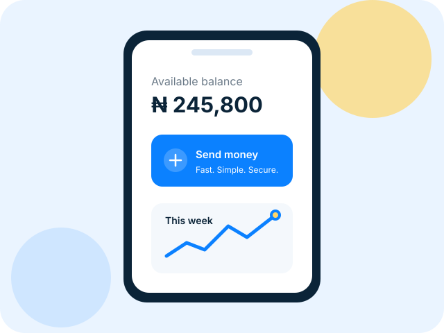

Balance at a glance
The dashboard keeps the current balance, quick actions, and latest activity in one scan path. The balance can also be hidden on demand.
Rogontra Pay is a responsive digital-wallet interface built around three everyday tasks: checking a balance, reviewing a transfer, and finding a transaction later.
Frontend demonstration only — no account data is saved and no payments are sent.

Responsive from 320px upward
Transfer review before action
Sample data, clearly labelled
Rather than placing every possible feature on one page, the interface prioritises the information a user is most likely to check first.
The dashboard keeps the current balance, quick actions, and latest activity in one scan path. The balance can also be hidden on demand.
The transfer form validates sample details and moves them into a review screen instead of implying that money has been sent.
Transaction filters separate money in from money out, while the list keeps the amount, type, and time visible together.
Transaction history separates money in from money out, so patterns are easy to see when you need them.
View transaction historyRecent activity
Rogontra Pay’s public prototype explains what each screen does and does not do. As the product develops, its security, privacy, and support practices will be documented openly.
Visit the Trust CenterNo. This is a portfolio prototype. Buttons and forms demonstrate the intended product experience but do not create accounts, store credentials, or process payments.
The Trust Center explains the prototype’s boundaries and links to its privacy, terms, and help pages.
Real authentication, verification, payment processing, account data, and support workflows will only be enabled after secure backend implementation and appropriate legal review.